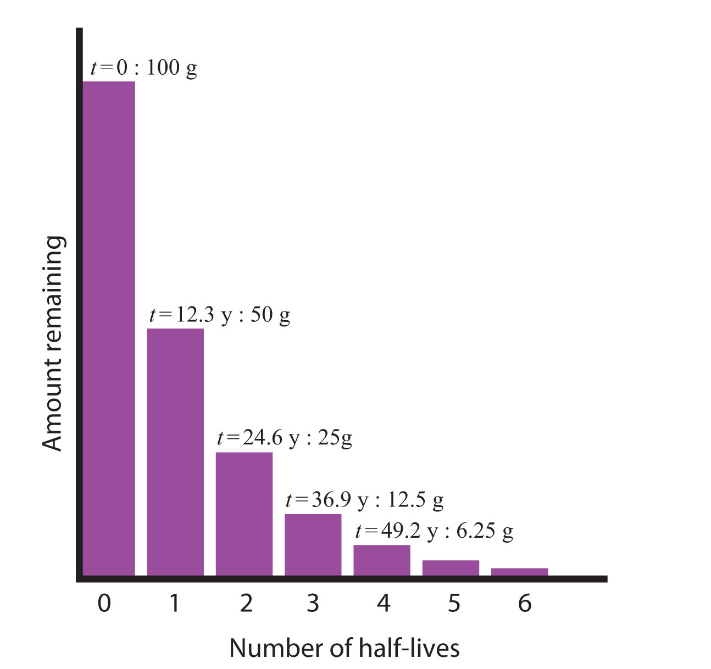

Whether or not a given isotope is radioactive is a characteristic of that particular isotope. Some isotopes are stable indefinitely, while others are radioactive and decay through a characteristic form of emission. As time passes, less and less of the radioactive isotope will be present, and the level of radioactivity decreases. An interesting and useful aspect of radioactive decay is half-lifeThe amount of time it takes for one-half of a radioactive isotope to decay., which is the amount of time it takes for one-half of a radioactive isotope to decay. The half-life of a specific radioactive isotope is constant; it is unaffected by conditions and is independent of the initial amount of that isotope.
Consider the following example. Suppose we have 100.0 g of tritium (a radioactive isotope of hydrogen). It has a half-life of 12.3 y. After 12.3 y, half of the sample will have decayed from hydrogen-3 to helium-3 by emitting a beta particle, so that only 50.0 g of the original tritium remains. After another 12.3 y—making a total of 24.6 y—another half of the remaining tritium will have decayed, leaving 25.0 g of tritium. After another 12.3 y—now a total of 36.9 y—another half of the remaining tritium will have decayed, leaving 12.5 g. This sequence of events is illustrated in Figure 15.1 "Radioactive Decay".
Figure 15.1 Radioactive Decay
During each successive half-life, half of the initial amount will radioactively decay.
We can determine the amount of a radioactive isotope remaining after a given number half-lives by using the following expression:
where n is the number of half-lives. This expression works even if the number of half-lives is not a whole number.
The half-life of fluorine-20 is 11.0 s. If a sample initially contains 5.00 g of fluorine-20, how much remains after 44.0 s?
Solution
If we compare the time that has passed to the isotope’s half-life, we note that 44.0 s is exactly 4 half-lives, so using the previous expression, n = 4. Substituting and solving results in the following:
Less than one-third of a gram of fluorine-20 remains.
Test Yourself
The half-life of titanium-44 is 60.0 y. A sample of titanium contains 0.600 g of titanium-44. How much remains after 240.0 y?
Answer
0.0375 g
Half-lives of isotopes range from fractions of a microsecond to billions of years. Table 15.2 "Half-Lives of Various Isotopes" lists the half-lives of some isotopes.
Table 15.2 Half-Lives of Various Isotopes
| Isotope | Half-Life |
|---|---|
| 3H | 12.3 y |
| 14C | 5730 y |
| 40K | 1.26 × 109 y |
| 51Cr | 27.70 d |
| 90Sr | 29.1 y |
| 131I | 8.04 d |
| 222Rn | 3.823 d |
| 235U | 7.04 × 108 y |
| 238U | 4.47 × 109 y |
| 241Am | 432.7 y |
| 248Bk | 23.7 h |
| 260Sg | 4 ms |
You may not think of yourself as radioactive, but you are. A small portion of certain elements in the human body are radioactive and constantly undergo decay. The following table summarizes radioactivity in the normal human body.
| Radioactive Isotope | Half-Life (y) | Isotope Mass in the Body (g) | Activity in the Body (decays/s) |
|---|---|---|---|
| 40K | 1.26 × 109 | 0.0164 | 4,340 |
| 14C | 5,730 | 1.6 × 10−8 | 3,080 |
| 87Rb | 4.9 × 1010 | 0.19 | 600 |
| 210Pb | 22.3 | 5.4 × 10−10 | 15 |
| 3H | 12.3 | 2 × 10−14 | 7 |
| 238U | 4.47 × 109 | 1 × 10−4 | 5 |
| 228Ra | 5.76 | 4.6 × 10−14 | 5 |
| 226Ra | 1,620 | 3.6 × 10−11 | 3 |
The average human body experiences about 8,000 radioactive decays/s.
Most of the radioactivity in the human body comes from potassium-40 and carbon-14. Potassium and carbon are two elements that we absolutely cannot live without, so unless we can remove all the radioactive isotopes of these elements, there is no way to escape at least some radioactivity. There is debate about which radioactive element is more problematic. There is more potassium-40 in the body than carbon-14, and it has a much longer half-life. Potassium-40 also decays with about 10 times more energy than carbon-14, making each decay potentially more problematic. However, carbon is the element that makes up the backbone of most living molecules, making carbon-14 more likely to be present around important molecules, such as proteins and DNA molecules. Most experts agree that while it is foolhardy to expect absolutely no exposure to radioactivity, we can and should minimize exposure to excess radioactivity.
What if the elapsed time is not an exact number of half-lives? We can still calculate the amount of material we have left, but the equation is more complicated. The equation is
where e is the base of natural logarithms (2.71828182…), t is the elapsed time, and t1/2 is the half-life of the radioactive isotope. The variables t and t1/2 should have the same units of time, and you may need to make sure you know how to evaluate natural-logarithm powers on your calculator (for many calculators, there is an “inverse logarithm” function that you can use; consult your instructor if you are not sure how to use your calculator). Although this is a more complicated formula, the length of time t need not be an exact multiple of half-lives.
The half-life of fluorine-20 is 11.0 s. If a sample initially contains 5.00 g of fluorine-20, how much remains after 60.0 s?
Solution
Although similar to Example 3, the amount of time is not an exact multiple of a half-life. Here we identify the initial amount as 5.00 g, t = 60.0 s, and t1/2 = 11.0 s. Substituting into the equation:
amount remaining = (5.00 g) × e−(0.693)(60.0 s)/11.0 sEvaluating the exponent (and noting that the s units cancel), we get
amount remaining = (5.00 g) × e−3.78Solving, the amount remaining is 0.114 g. (You may want to verify this answer to confirm that you are using your calculator properly.)
Test Yourself
The half-life of titanium-44 is 60.0 y. A sample of titanium contains 0.600 g of titanium-44. How much remains after 100.0 y?
Answer
0.189 g
Do all isotopes have a half-life? Explain your answer.
Which is more radioactive—an isotope with a long half-life or an isotope with a short half-life?
How long does it take for 1.00 g of palladium-103 to decay to 0.125 g if its half-life is 17.0 d?
How long does it take for 2.00 g of niobium-94 to decay to 0.0625 g if its half-life is 20,000 y?
It took 75 y for 10.0 g of a radioactive isotope to decay to 1.25 g. What is the half-life of this isotope?
It took 49.2 s for 3.000 g of a radioactive isotope to decay to 0.1875 g. What is the half-life of this isotope?
The half-live of americium-241 is 432 y. If 0.0002 g of americium-241 is present in a smoke detector at the date of manufacture, what mass of americium-241 is present after 100.0 y? After 1,000.0 y?
If the half-life of tritium (hydrogen-3) is 12.3 y, how much of a 0.00444 g sample of tritium is present after 5.0 y? After 250.0 y?
Explain why the amount left after 1,000.0 y in Exercise 7 is not one-tenth of the amount present after 100.0 y, despite the fact that the amount of time elapsed is 10 times as long.
Explain why the amount left after 250.0 y in Exercise 8 is not one-fiftieth of the amount present after 5.0 y, despite the fact that the amount of time elapsed is 50 times as long.
An artifact containing carbon-14 contains 8.4 × 10−9 g of carbon-14 in it. If the age of the artifact is 10,670 y, how much carbon-14 did it have originally? The half-life of carbon-14 is 5,730 y.
Carbon-11 is a radioactive isotope used in positron emission tomography (PET) scans for medical diagnosis. Positron emission is another, though rare, type of radioactivity. The half-life of carbon-11 is 20.3 min. If 4.23 × 10−6 g of carbon-11 is left in the body after 4.00 h, what mass of carbon-11 was present initially?
Only radioactive isotopes have a half-life.
51.0 d
25 y
0.000170 g; 0.0000402 g
Radioactive decay is an exponential process, not a linear process.
3.1 × 10−8 g